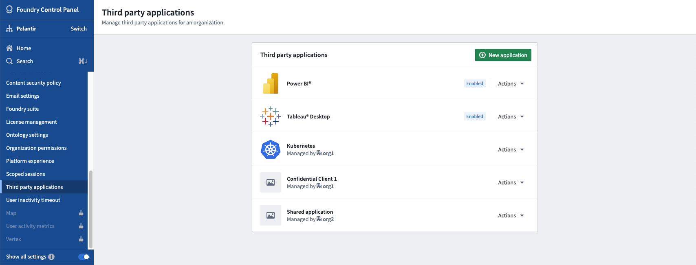
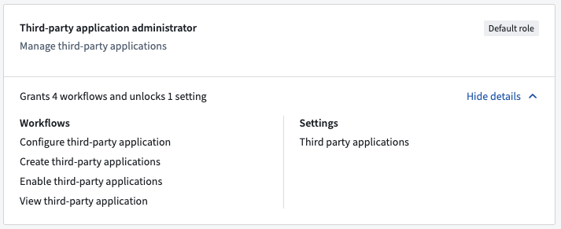

Foundryâs platform security controls ensure that integration and interoperability with third-party applications can be centrally managed while respecting established security measures. Third-party application authorization supports the OAuth 2.0 framework.
:::callout{theme="warning"} Users should use Developer Console to manage their application configuration. The Control Panel view only applies if Developer Console has not been enabled for the user. :::
Third-party application permissions should be managed by Foundry administrators to ensure the security of the Foundry platform. The third-party application interface in Control Panel enables Foundry administrators to see which applications have been registered on Foundry as well as which applications have been enabled for access. From the third-party application interface, administrators can register new applications, manage existing applications, and enable or disable applications.
For users with the appropriate permissions, the third-party application management interface can be reached by clicking Open other workspaces > Control Panel located at the lower corner of the left navigation bar. Then, choose an enrollment and an associated organization before finally selecting the Third-party applications tab under Organization Settings.

Users must hold the Third-party application administrator role for the selected organization in order to access the third-party application management interface.

For more details, review Permissions in Control Panel.